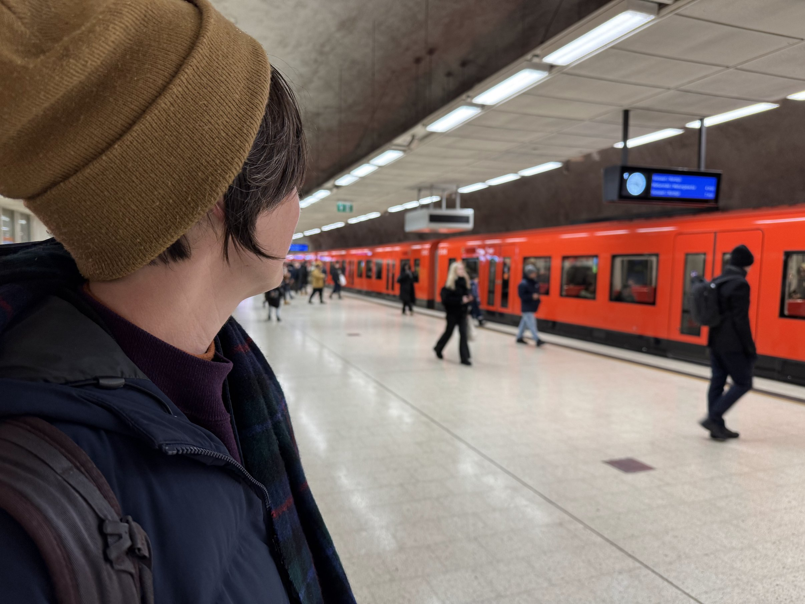

Denmark, Finland, Estonia 2024
Jan 2025
This trip started in style. We learned from our trip a few years ago to Sweden that if we don't sleep on the red eye leg to Europe, the next day will be a disaster. I'm not risking it again, so I bid on the SAS auction system for "Business Class" seats and to my surprise, my min bid of 680 Euros won. So we took advantage by doing the full lounge experience at the Delta SkyTeam Lounge. It was actually really nice.
So the most important thing for us were the lie flat seats cause that should help the sleep a lot. But even with the seats, the dinner/breakfast service was so long that we only got about 4 hours of sleep. It was enough and still worth the value, however, it's really worth the value for the guy in front of me. He came close to finishing a bottle of Champagne.
This is the dinner that took them 1 hour to serve. They give people food but other than the salad, none of it was that great. I used to really enjoy airplane food, but SAS is a dissapointment in this department.
Our first day in Copenhagen after landing was spent mostly wandering about seeing what is so special about the city. It was a nice city, and we even got to see the King and Queen go by. We randonmly ended up in Freetown Christiania which was really nice.
Our favorite part might be eating a Danish dinner at Det Lille Apotek. It was a old basement Danish resturant. I really liked the Curry Herring.
The next morning we caught our flight to Helsinki. Dana and I immediately liked Helsinki. It was not outwardly very touristy, and there were no upcharge of touristy items. The transportation is fast and efficent. Best of all, it seemed like families lived there.
While we were there, they were doing a special light show (remember that it's night-time all the time). One of the more interesting light shows were personal stories about Ukraine. Finland is in constant fear of being the "next" Ukraine because of its proximity to Russia.
The next day, we went to Nuuksio National Park to see reindeers. I was silly and didn't read that during the winter, the reindeer part was only open on the weekends, but we were still able to see the reindeers from the driveway. The park still offered some great hikes and sights. It also had one of Dana's favorite gift shops.
Best thing about the national park was the cafeteria. They had a 13 Euro special which included salmon soup, soft bread, Herring salad, and unlimited coffee. What a deal.
Coming back from the National Park, we stopped at Sibelius Monument, for no other reason other than that it was along the way.
And randomly stumbled upon Cafe Regatta. It is a tourist location, yet, the coffee and pastry here is still around 3 euros. Why is there no tourist pricing in Finland? Is it because they culturally have no desire for capitalistic gains?
That day we ate so much fancy food that we weren't especially hungry. It was an opportunity for us to try the McD of Finland -- Hesburger.
The next day, Dana and I went to Suomenlinna on a city ferry. The city has public ferries that take people from one island to another. The Fort itself was not that interesting (I don't think I need to visit another fort in any city for the rest of my life), but the fact that the island is also a place where there are public housing is super interesting.
That day, we also tried a Finnish tradition of Sauna at a place called Loyly. We met some really nice people here. We paid for a 2 hour slot, but Dana and I had enough of alternating between sitting in a hot steamy room and jumping in the frigid Baltic after only an hour.
Another cool thing about Helsinki is that the Metro had a Soviet feel to it. For some reason I really like the aestetics of ex-soviet republics (even though Finland is not one)
That evening, we took cross countrying skiing classes and learned that there were actually two varieties of x-country skiing -- "Classic" and "Skate." We need to bring this sport to Chicago.
There was only 1 resturant we ate twice at on this whole trip and it was a place called Jumbowl. It is legit some of the best noodles I've ever had regardless of continent.
The next day was our day-excursion to Tallinn, Estonia. For 30 Euros roundtrip, one can take a giant Ferry (Tallink) for 2 hours across the Gulf of Finland to Estonia. The ship is huge; there's a full scale mall and food court inside. The contrast is that Helsinki is a relatively new, metropolitian city, and Tallinn is an old ex-soviet city.
Old-town Tallinn is the tourist location, but Dana and I often find tourist locations to be boring. So we wandered off to a local market. There was a candy store in the Market and Dana went ahead and bought a ton of candy. Once we left the touristy locations, Estonia turns out to be an extremely cheap place.
Back in Old Town, Tallinn claims to have the oldest public Christmas tree. Fact check is probably needed for this one.

On the final day, we finally had a sunny day in Helsinki. It really makes it clear that the sun never really rises in Finland. This picture was taken near their observatory at about 11 am.
We found Café Ursula in the Park and again it was filled with families taking a break from sledding. This was the coldest day and we learned that Finlanders don't really mind drinking their coffee outside no matter the temperature -- as long as they have a sheep skin to sit on.
Also Helsinki had the nicest libraries. That day we visited 2 of them just to get out of the cold.
This is the airbnb we stayed it. It was tiny, but it served its purpose.
Dana and I really like Finland. There isn't a part of Scandinavia we don't like -- except the airline -- SAS sucks. The airplane smelled terrible. In this picture, we were flying over Nuuk, Greenland on our way home. The mountain ranges look amazing. Dana and I might have to try Oslo, Reykjavík, or Nuuk next.